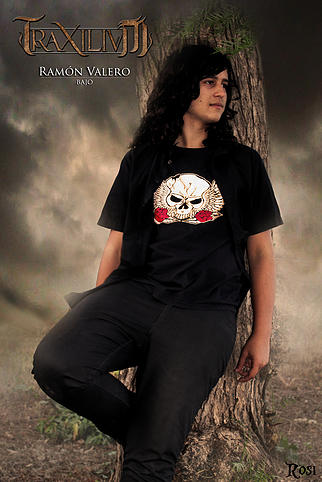
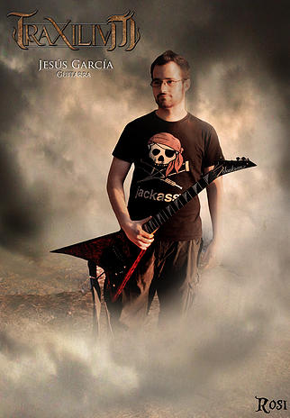

Fecha de nacimiento: 12/12/89. Lugar de Nacimiento: Alicante. Instrumento que toca: Guitarra. Bandas Anteriores: Mos i Avant , Picor Vaginal , Paliza Brutal. Influencias Musicales: Power Metal , Heavy Metal Español 80´s y 90´s. Bandas favoritas: Rhapsody of Fire, Freedom Call, Dragonforce, Saratoga (con Leo). Primer Disco Rock-Heavy: Crisis de Fe - Razas de Noche (2003). Primer Concierto: Saratoga - Villarobledo - Viñarock 2006. Canción Favorita de Traxilium: Pide Perdón. Pelicula favorita: Forrest Gump. Libro Favorito: Crónicas Vampíricas (Anne Rice). Cita: Mas vale polvo en un año que cien pajas en el baño.
Fecha de nacimiento: 29/09/96. Lugar de Nacimiento: Albatera. Instrumento que toca: Bajo. Bandas Anteriores: Nalgian, Electromatics. Influencias Musicales: Hard Rock, Heavy Metal, Metalcore y Funk Metal. Bandas favoritas: Avenged Sevenfold, Dunedain, Extreme, Heaven´s Basement y The Beatles. Primer Disco Rock-Heavy: Appetite for destruction-Guns´n´Roses. Primer Concierto: Avatar + 5FDP + Avenged Sevenfold - Palacio - Vistalegre - Madrid 2013. Canción Favorita de Traxilium: El Infierno Ante Mi. Pelicula favorita: La Milla Verde. Libro Favorito: La Naranja Mecánica. Cita: Vale más hacer y arrepentirse,que no hacer y arrepentirse.
Fecha de nacimiento: 26/05/92. Lugar de Nacimiento: Jumilla. Instrumento que toca: Guitarra Eléctrica. Bandas Anteriores: Fatal Death, Skrawler, Razorbath. Influencias Musicales: Thrash Metal, Melodic Death Metal, Death Metal, Crossover Thrash. Bandas favoritas: Exodus, Angelus Apatrida, Slayer, Testament, Entombed, Metallica, Megadeth, Municipal Waste, Pantera Carcass, Onslaught. Primer Disco Rock-Heavy: Kil´em All - Metallica. Primer Concierto: Lorca Rock. Canción Favorita de Traxilium: Pide Perdón. Pelicula favorita: Jurassic Park. Libro Favorito: Juego de Tronos - Canción de Hielo y Fuego: Tormenta de Espadas. Cita: El ego mata al talento. Estúpido Flander
Fecha de nacimiento: 15/12/1990. Lugar de nacimiento: Elda. Instrumento que toca: Bateria. Bandas anteriores: Picor Vaginal. Influencias musicales: Metal Alternativo, Metal Industrial, Rock de los 80´s. Bandas favoritas: In Flames, Corpore, Atreyu, Hamlet, Hora zulu, Girugamesh. Primer disco de Rock-Heavy: The Works - Queen. Primer concierto: Mágo de Oz - Pinoso 2004. Canción favorita de Traxilium: Otra Realidad. Película favorita: Mystic River. Libro favorito: Tempus Fugit. Cita: "Me metí en el Heavy Metal para que me chuparan la polla. Ahora sigue siendo importante, pero también hay otras cosas"(Blackie Lawless).
Fecha de nacimiento: 28/09/1987 Lugar de nacimiento: Alicante. Instrumento que toca: Voz. Bandas anteriores: Edhellen, Efímero, Tritonus, Riverwind. Influencias musicales: Bandas sonoras, música tradicional celta, Metal de los 90´s. Bandas favoritas: Saratoga, Bloodbound, Rhapsody of Fire, Galneryus, Zenobia, Saurom, Opera Magna. Primer Disco Rock-Heavy: Walls of Jericho - Helloween Primer concierto: Mágo de Oz y Cuatro Gatos - Cuartel de Artillería - Murcia 2003. Canción favorita de Traxilium: Tu Recuerdo. Película favorita: Parque Jurásico. Libro favorito: El Señor de los Anillos. Cita: "Más vale bárbaro en mano que cientos cargando"